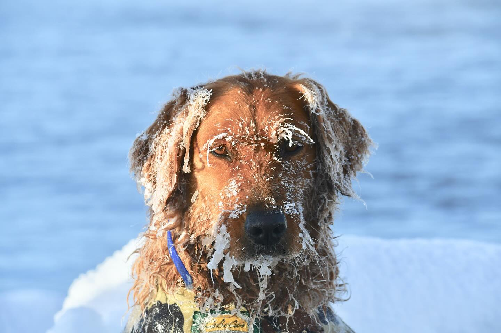

Episode 19 · December 18, 2023 · 1226
(EP:019) Cold Weather & Hunting Dogs

About This Episode
In this episode we talk about hunting your dog in cold weather. We go over some things that can help man's best friend while in the field while braving the cold temps. Hope you guys enjoy this episode! Check us out and follow us in the following locations below: Instagram: thebirddogpodcast utahbirddogtraining fieldbredgoldenretrievers Good hunting and training everyone!
Questions about the training topics in this episode? Tyce works with bird dog owners and hunters through Utah Bird Dog Training. Reach out to work with him directly.
Resources & Links
- Utah Bird Dog Training — Tyce's professional training services.
Transcript
Full transcript for Episode 19: (EP:019) Cold Weather & Hunting Dogs.
Tyce
Hey everyone, welcome to the Bird Dog Podcast. My name is Tyce. Today I want to talk about cold weather and hunting dogs — specifically vests, how to introduce them, when to use them, and a few other cold weather tips worth knowing before you head into the field this season.
The most important thing about a vest: it needs to be form fitting. A vest that's loose and billowing isn't doing much. It traps water between the material and the dog's coat, then freezes out, and you've essentially put a stiff wet fabric shell on your dog that provides neither insulation nor protection. A properly fitted vest stays snug against the body. If you can push your hand up under the vest after the dog swims, the fur underneath should be relatively dry. That's what a good vest is doing — keeping water off the core so the dog retains body heat and the coat stays functional.
A vest I like is the VersaVest by Momarsh (momarsh.com). What I appreciate about it is the adjustable panels — you can swap the camo pattern between seasons, and more practically, you can adjust the fit if the dog gains or loses weight. Most dogs fluctuate a few pounds between the off-season and peak hunting season, and a vest that doesn't fit right isn't serving its purpose. The VersaVest also usually has a handle on top, which is useful for lifting a dog in and out of a boat or over an obstacle in the field. It runs about $100, which is reasonable for something that protects your dog's life.
How to introduce the vest: don't put it on a dog for the first time and take it hunting. Get the vest on the dog at home or at a training session, then immediately take them for a walk or throw some bumpers. Keep their mind occupied with something they enjoy. A dog that's just standing there with a foreign object strapped to its body is going to be uncomfortable and weird about it. A dog that's moving, working, carrying a bumper — it forgets the vest is on within a few minutes. Build that association early and vest days become no different than any other day.
When should you use one? My current rule: if the water temperature is below 50°F and the dog is going to make multiple retrieves, the vest goes on. I addressed this in a recent episode — I had a young dog nearly go under after 30 minutes of back-to-back retrieves in cold river water. Her motor skills started failing from cold. A vest would have provided both buoyancy and insulation in exactly that situation. For situations with ice or debris in the water, a vest also protects the chest and belly from cuts. Put it on when conditions are nasty. It doesn't hurt the dog to wear one, and in the right scenario it saves their life.
One cold weather behavior worth mentioning: if a dog doesn't have a vest on and comes out of cold water, some dogs will actively roll in snow. This isn't random — the snow acts like a towel, absorbing surface water from the coat. They shake after, and they're almost immediately drier than a dog that just sat there wet. This works when there's enough snow and the dog can access it between retrieves. But it's situational and not a substitute for a vest in sustained cold water hunting. Know your conditions, know your dog, and gear up accordingly. Thanks for listening.
About the Host
Tyce Erickson
Tyce Erickson is a professional bird dog trainer and the owner of Utah Bird Dog Training in Utah. For nearly two decades he has worked with pointing dogs, retrievers, and family hunting dogs — helping owners build dogs that are capable and enjoyable in the field. The Bird Dog Podcast is an extension of that work: honest conversations on training, hunting, breeding, and everything that goes into a life spent working dogs.
More About Tyce